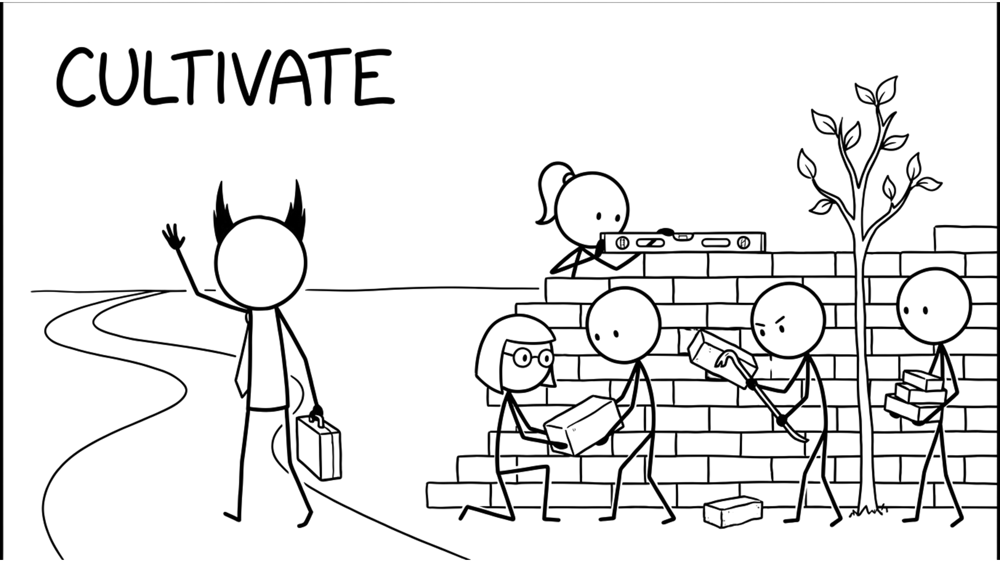

<section id="cap-cultivate" data-transition="fade" style="display:flex; align-items:center; justify-content:center; padding:0; background:#fcfcfa">

<p style="position:absolute;left:0;bottom:10px;width:1920px;margin:0;text-align:center;font-family:'Patrick Hand', 'Trebuchet MS', sans-serif;font-size:22px;color:#8a8f98">Copyright Dobromir Montauk 2026</p>
<aside><b>Cultivate.</b> Culture is what happens when you're not in the room.<br>- Define it in a few words people can act on, like "Rigorously Get Shit Done": rigor, and done means the customer's problem is solved.<br>- Reward what you say you value. If you say quality but celebrate only speed, the team learns speed.<br>- Model it: the postmortem without blame starts with your own mistake.<br>- Hire and fire by it. Who you let in, and who you let stay, is the culture.<br>It's slow to build and fast to lose.</aside>
</section>
